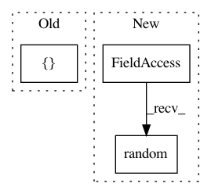

d3bdc5449964423387861c78edd9d890a81a5466,tests/layers/test_layers_recurrent.py,Layer_RNN_Test,setUpClass,#Any#,18
Before Change
cls.keras_rnn_model = tf.keras.Model(inputs=cls.keras_net_in, outputs=cls.keras_net_rnn)
cls.keras_rnn_model.compile(optimizer="adam",
loss="categorical_crossentropy",
metrics=["accuracy"])
"""
After Change
cls.data_y = np.zeros([cls.batch_size, 1]).astype(np.float32)
map1 = np.random.random([1, cls.num_steps])
map2 = np.random.random([cls.embedding_size, 1])
for i in range(cls.batch_size):
cls.data_y[i] = np.matmul(map1, np.matmul(cls.data_x[i], map2))
@classmethod
In pattern: SUPERPATTERN
Frequency: 3
Non-data size: 3
Instances
Project Name: tensorlayer/tensorlayer
Commit Name: d3bdc5449964423387861c78edd9d890a81a5466
Time: 2019-03-31
Author: jingqing.zhang15@imperial.ac.uk
File Name: tests/layers/test_layers_recurrent.py
Class Name: Layer_RNN_Test
Method Name: setUpClass
Project Name: keras-team/autokeras
Commit Name: 21994919156aac15558f77555538346fb702bcbc
Time: 2018-11-26
Author: jhfjhfj1@gmail.com
File Name: tests/nn/test_graph.py
Class Name:
Method Name: test_long_transform
Project Name: keras-team/keras
Commit Name: 45a10bc6d708fade197a37bfbc62312caf70e6a7
Time: 2017-02-17
Author: francois.chollet@gmail.com
File Name: tests/keras/layers/test_convolutional_recurrent.py
Class Name:
Method Name: test_convolutional_recurrent